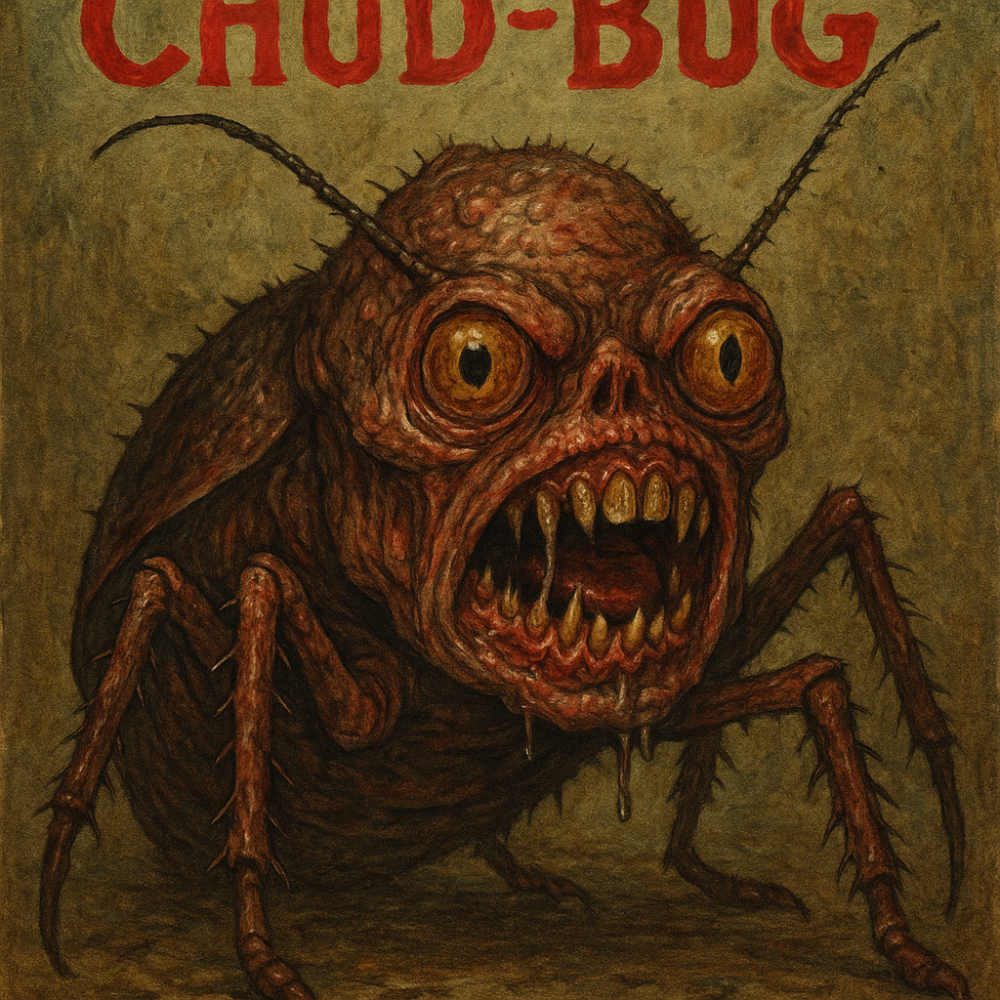

Chud Bugs
still working on it
What is a Chud Bug
Chud Bug (noun, slang, derogatory): An individual, often found online, who is perceived as unthinkingly hostile, socially inept, and consumed by paranoid, conspiracy-driven beliefs. The term is a portmanteau of "Chud," from the 1984 horror film C.H.U.D. (Cannibalistic Humanoid Underground Dwellers), and "Bug," suggesting a repulsive, pest-like quality. The term is used to describe someone who responds to reasonable discussion with incoherent rants, displays troll-like behavior, or fervently promotes conspiracy theories.
Chud Bug
Part of Speech: Noun, Slang, Derogatory
Pronunciation: /chʌd bʌɡ/
Plural: chud bugs
Etymology: The term is a portmanteau of two distinct elements: "Chud," a reference to the monstrous, subterranean creatures from the 1984 horror film C.H.U.D. (Cannibalistic Humanoid Underground Dwellers), and "Bug," which colloquially refers to an insect or pest. This combination is intended to dehumanize, suggesting a creature that is both subhuman and repulsive.
Core Definition: An individual, often found online, who is perceived as unthinkingly hostile, socially inept, and consumed by paranoid, conspiracy-driven beliefs. The term merges the image of a repulsive pest with the dehumanizing qualities of a "C.H.U.D."
Connotation & Visuals: The term evokes a specific visual of a grotesque, wide-eyed, and twitchy bug-like creature—often depicted with a frothing mouth and jagged teeth—as seen in the accompanying illustration. This imagery solidifies the term's power as an insult, suggesting a subject that is not only intellectually and socially repulsive but physically disgusting as well.
Characteristics: A chud bug is typically depicted as a twitchy, loud, and bug-eyed figure. They are characterized by a profound sense of misplaced outrage, a lack of self-awareness, and a tendency to spew incoherent, rage-fueled arguments. Related Terms: incel, soyboy, troll, neckbeard, doomer.
Note: While related, "chud bug" is more specific, often combining the social ineptitude of a "troll" with the paranoid, conspiratorial beliefs of a "doomer" and the repulsive aesthetic of a "neckbeard."
Usage: The term is primarily used in online discourse to describe someone who responds to reasonable discussion with incoherent rants, displays troll-like behavior, or fervently promotes conspiracy theories. It’s used to dismiss someone as irredeemably lost to their own warped worldview.
Example: "After he tried to explain his theory about the moon landing being a hoax for the tenth time, I just muted the thread; it was full of chud bugs.”